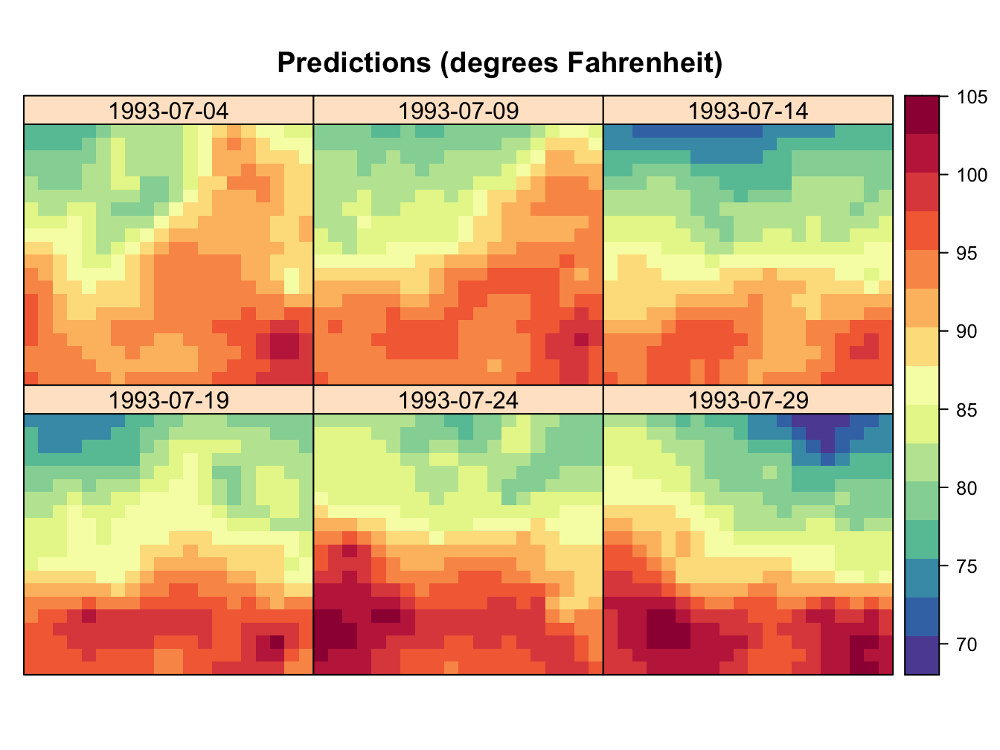
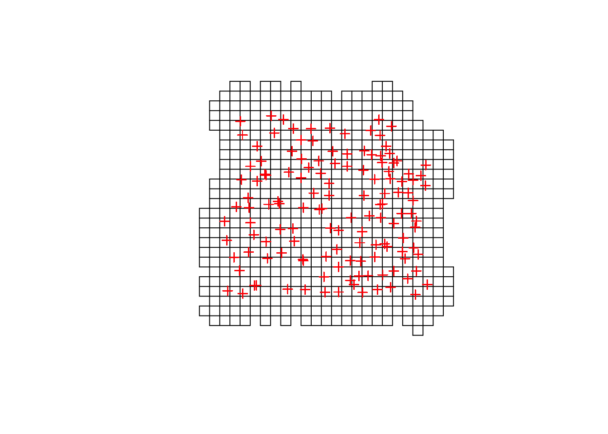
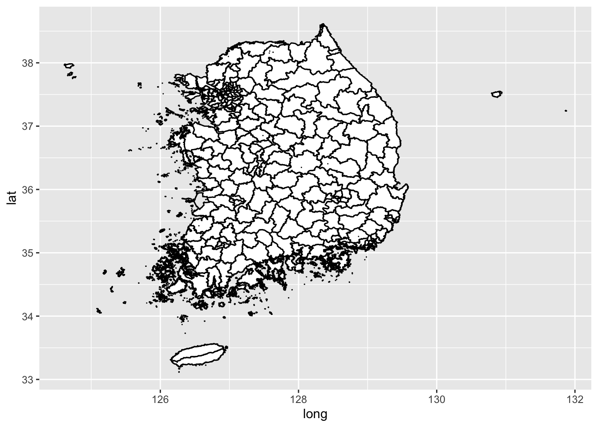
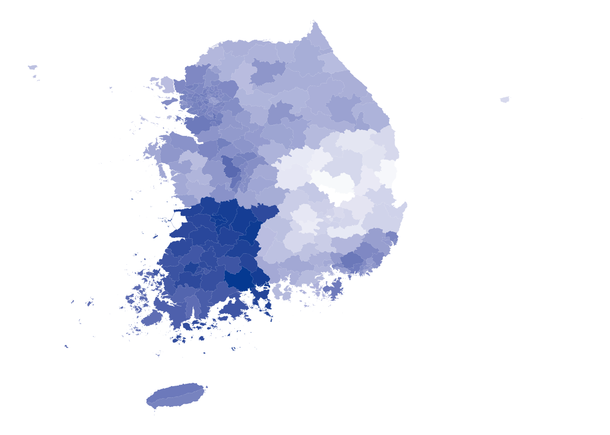
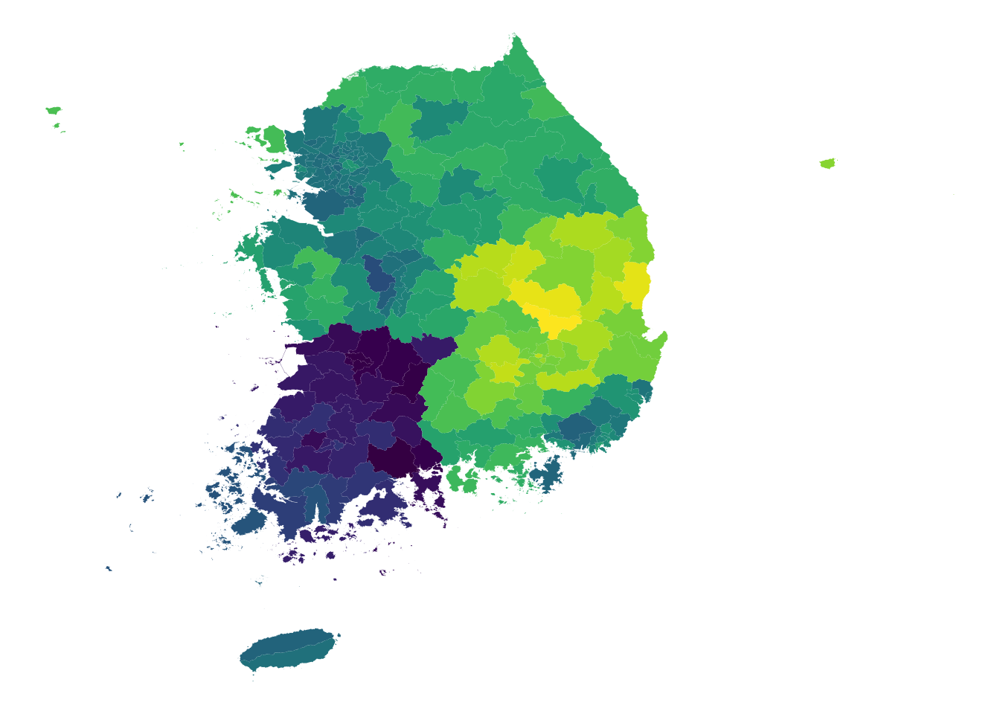
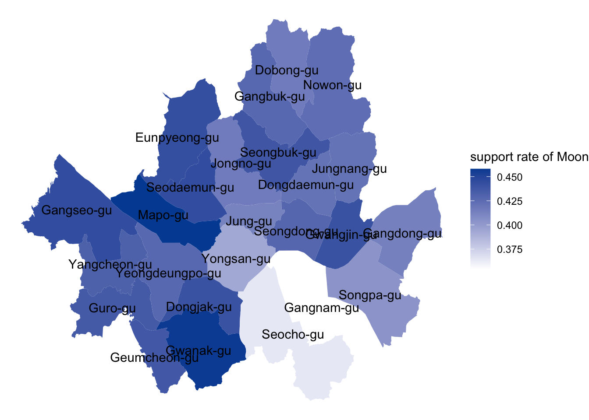

Chapter 2 Mapping Spatio Temporal Data
In this chapter, we talk about how to map spatio-temporal data in R.
2.1 Some basic class regarding spatio-temporal data in R
Before moving on, let’s take a look at various spatial classes in R implemented in \(\texttt{sp}\) package.
 Roughly, there are classes regarding points, grid, lines, polygons. For point referenced data which contain latitude and longitude, the class of data will be \(\texttt{SpatialPoints}\) or \(\texttt{SpatialPointsDataFrame}\). For lattice data, the class will be regarding \(\texttt{Polygon}\), as their basic units are areas.
Roughly, there are classes regarding points, grid, lines, polygons. For point referenced data which contain latitude and longitude, the class of data will be \(\texttt{SpatialPoints}\) or \(\texttt{SpatialPointsDataFrame}\). For lattice data, the class will be regarding \(\texttt{Polygon}\), as their basic units are areas.
2.1.1 SpatialPoints
\(\texttt{SpatialPoints}\) is a class with the spatial information. We can easily create this object using \(\texttt{sp}\) package.
library(sp)
xc = round(runif(10), 2)
yc = round(runif(10), 2)
xy = cbind(xc,yc)
xy.sp = SpatialPoints(xy)
xy.sp## class : SpatialPoints
## features : 10
## extent : 0.03, 0.94, 0.01, 0.64 (xmin, xmax, ymin, ymax)
## crs : NA## xc yc
## [1,] 0.49 0.47
## [2,] 0.81 0.30
## [3,] 0.03 0.01
## [4,] 0.56 0.28
## [5,] 0.86 0.45
## [6,] 0.57 0.50
## [7,] 0.40 0.43
## [8,] 0.30 0.64
## [9,] 0.03 0.03
## [10,] 0.94 0.31Note that because we do not include CRS, the last line returns error.
2.1.2 SpatialPointsDataFrame
\(\texttt{SpatialPointsDataFrame}\) is a class with the spatial information and on top of that, some other attributes.
## class : SpatialPointsDataFrame
## features : 10
## extent : 0.03, 0.94, 0.01, 0.64 (xmin, xmax, ymin, ymax)
## crs : NA
## variables : 1
## names : z1
## min values : 0.11
## max values : 1Note the coordinates column in xy.spdf which is spatial information in xy.spdf dataset. Also, z1 column serves for other variables. Let’s get the summary for xy.spdf.
## Object of class SpatialPointsDataFrame
## Coordinates:
## min max
## xc 0.03 0.94
## yc 0.01 0.64
## Is projected: NA
## proj4string : [NA]
## Number of points: 10
## Data attributes:
## z1
## Min. :0.110
## 1st Qu.:0.540
## Median :0.800
## Mean :0.692
## 3rd Qu.:0.895
## Max. :1.000\(\texttt{SpatialPointsDataFrame}\) can be created directly from data.frames by specifying which columns contain the coordinates.
2.1.3 Polygons and SpatialPolygons
To grasp the concept of \(\texttt{Polygons}\) class in R, let’s create a basic polygon.
## [1] "Polygon"
## attr(,"package")
## [1] "sp"## [1] "Polygons"
## attr(,"package")
## [1] "sp"Individual polygon is created with \(\texttt{Polygon}\) function. After creating multiple Polygons, we can concatenate them through \(\texttt{Polygons}\) function. Because \(\texttt{SpatialPolygons}\) class only gets the \(\texttt{Polygons}\) class, even a single polygon should be converted to \(\texttt{Polygons}\) class for mapping the polygon.
## [1] "SpatialPolygons"
## attr(,"package")
## [1] "sp"
Therefore, to plot more than one polygons, we should follow the steps * Create individual Polygon class * Concatenate the created Polygon to make Polygons class * Make SpatialPolygons class through Polygons class * Plot SpatialPolygons class
# individual polygons
Sr1 = Polygon(cbind(c(2,4,4,1,2),c(2,3,5,4,2)))
Sr2 = Polygon(cbind(c(5,4,2,5),c(2,3,2,2)))
Sr3 = Polygon(cbind(c(4,4,5,10,4),c(5,3,2,5,5)))
Sr4 = Polygon(cbind(c(5,6,6,5,5),c(4,4,3,3,4)), hole = TRUE) # polygon with holes
# concatenated polygons
Srs1 = Polygons(list(Sr1), "s1")
Srs2 = Polygons(list(Sr2), "s2")
Srs3 = Polygons(list(Sr3, Sr4), "s3/4")
SpP_all = SpatialPolygons(list(Srs1,Srs2,Srs3), 1:3)
plot(SpP_all, col = 1:3, pbg="white")
SpP_12 = SpatialPolygons(list(Srs1, Srs2), 1:2)
SpP_13 = SpatialPolygons(list(Srs1, Srs3), 1:2)
plot(SpP_12, col=1:2)Note that when we concatenate with function \(\texttt{Polygons}\), it becomes one Polygon, so we cannot separte the two individual polygons, i.e.,

That is, we can separate two polygons Srs1, Srs2 by specifying color argument. However, by binning two polygons to one polygon through \(\texttt{Polygons}\) function, we cannot separate them by color any more.
2.2 Mapping data in R
Before coloring on the map, it is required that we need raster on which we plot. For example, we can get the usa raster.
usa <- getData('GADM', country='usa', level=2)
# ggplot() + geom_polygon(data=usa, aes(x=long, y=lat, group=group), fill='white', color='black')
class(usa)## [1] "SpatialPolygonsDataFrame"
## attr(,"package")
## [1] "sp"Note that the class of usa is \(\texttt{SpatialPolygonsDataFrame}\). For korea raster, thanks to the link here, we can get raster for larger unit, smaller unit.
shp_dir = '/Users/shinbo/Desktop/Statistics/etc/coordinates/SIG_201703/TL_SCCO_SIG.shp'
sigungu <- shapefile(shp_dir, encoding='euc-kr')
ggplot() + geom_polygon(data=sigungu, aes(x=long, y=lat, group=group), fill='white', color='black')## Regions defined for each Polygons
## SIG_CD SIG_ENG_NM SIG_KOR_NM
## 0 11110 Jongno-gu 종로구
## 1 11140 Jung-gu 중구
## 2 11170 Yongsan-gu 용산구
## 3 11200 Seongdong-gu 성동구
## 4 11215 Gwangjin-gu 광진구
## 5 11230 Dongdaemun-gu 동대문구Note the SIG_CD and SIG_ENG_NM. Each name of SIG has its own number. This number should correspond to each region, on which we want to plot some values. We plot the result of 19th President Vote in korea.
data_dir = '/Users/shinbo/Desktop/Statistics/etc/data/result.csv'
voting = read.csv(data_dir, fileEncoding='euc-kr')
head(voting)## Sido Sigun id moon hong ahn yoo shim etc X1st X1st_C X2nd
## 1 서울 종로구 11110 0.416 0.218 0.218 0.073 0.070 0.005 0.416 Moon 0.218
## 2 서울 중구 11140 0.412 0.217 0.235 0.071 0.060 0.005 0.412 Moon 0.235
## 3 서울 용산구 11170 0.393 0.239 0.217 0.080 0.066 0.004 0.393 Moon 0.239
## 4 서울 성동구 11200 0.428 0.200 0.226 0.078 0.064 0.004 0.428 Moon 0.226
## 5 서울 광진구 11215 0.441 0.194 0.221 0.072 0.069 0.004 0.441 Moon 0.221
## 6 서울 동대문구 11230 0.421 0.219 0.227 0.064 0.064 0.005 0.421 Moon 0.227
## X2nd_C gap final
## 1 Hong 0.198 0.416
## 2 Ahn 0.178 0.412
## 3 Hong 0.155 0.393
## 4 Ahn 0.203 0.428
## 5 Ahn 0.220 0.441
## 6 Ahn 0.194 0.421We get the voting result for each of sidogun and candidate. Now, let’s map the supporting rate of President Moon to see where he got the highest rate. We use \(\texttt{fortify}\) function to make \(\texttt{SpatialPolygonDataFrame}\) to \(\texttt{data.frame}\).
#gIsValid(sigungu)
#sigungu = gBuffer(sigungu, byid = TRUE, width = 0)
#gIsValid(sigungu)
sigungu = fortify(sigungu, region='SIG_CD')## SpP is invalidsigungu = merge(sigungu, voting, by='id')
p = ggplot() + geom_polygon(data=sigungu, aes(x=long, y=lat, group=group, fill=moon))
p + scale_fill_gradient(low='white', high='#004ea2') + theme_void() + guides(fill=F)
Let’s try different color using viridis package.

Now, we only look at moon’s support rate in seoul. First, select Gu’s in seoul by filtering
## Registering fonts with Rtheme_update(text=element_text(family="HUJingo340"))
seoul = sigungu[sigungu$id <= 11740,]
gu_dir = '/Users/shinbo/Desktop/Statistics/etc/data/seoul_coordinates.csv'
gu_text = read.csv(gu_dir, fileEncoding = 'euc-kr')
p = ggplot() + geom_polygon(data=seoul, aes(x=long, y=lat, group=group, fill=moon))
p + scale_fill_gradient(low='white', high='#004ea2') + theme_void() + labs(fill = "support rate of Moon") +
geom_text(data = gu_text,
aes(x = 경도,
y = 위도,
label = 시군구명_영문))